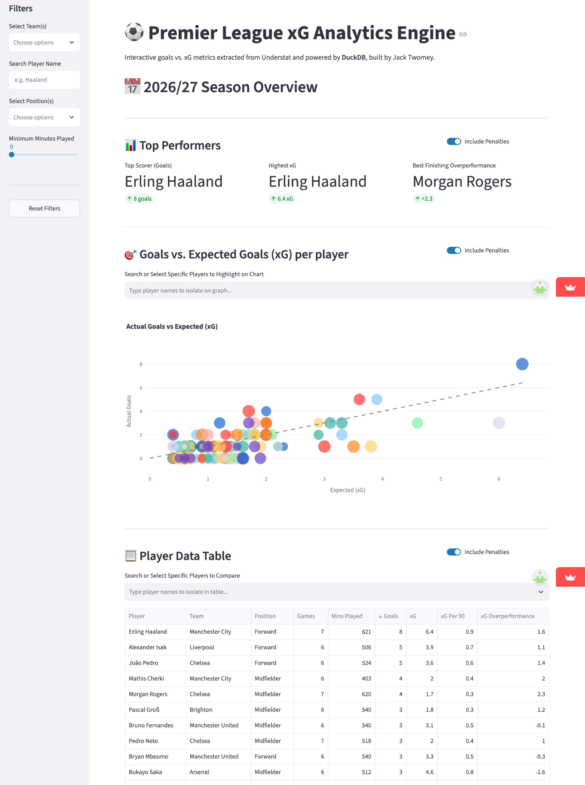

Project Overview
This was my first end-to-end data engineering project where I built a complete pipeline to collect football data from the web (Understat). I cleaned and transformed the data, queried it using SQL, and deployed an interactive dashboard using Python to display the results.

How the Pipeline Works
- Extract: Uses Python ('AsyncIO' and 'aiohttp') to collect player and team performance data from Understat APIs into raw JSON files.
- Transform: Uses Pandas to clean messy HTML character codes in player and team names, and calculates per-90 metrics (xG/90, npxG/90, xGA/90) and overperformance (Goals − xG).
- Load & Query: Saves processed data as CSV files. DuckDB executes fast in-memory SQL queries directly over these files inside the web app.
- Automate: Scheduled via GitHub Actions to automatically re-run the pipeline every day at 04:00 UTC so the data stays updated hands-free.
- Testing & Reliability: Includes basic unit tests written with 'pytest' and error handling so API or data issues do not crash the dashboard.
Tech Stack
- Language: Python 3.11
- Data Processing & SQL: Pandas, DuckDB
- Data Collection: 'understat', 'AsyncIO', 'aiohttp'
- Dashboard & Visualization: Streamlit, Plotly
- Testing & Automation: pytest, GitHub Actions
- Hosting: Streamlit Community Cloud
AI-Assisted Development
Throughout this project, I used AI tools (Claude and Gemini) as coding assistants to help me write Python scripts, debug errors, and learn new pipeline concepts. Working this way helped me build a fully functional system while developing practical skills in Python automation, SQL engines, unit testing, and scheduled workflows.